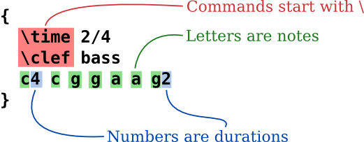
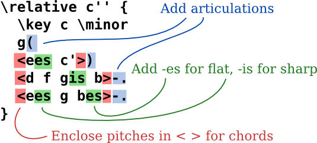
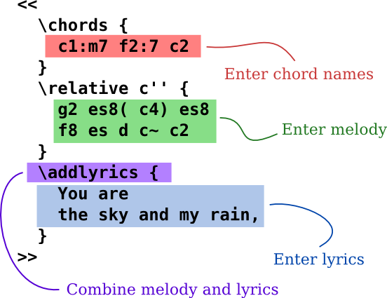
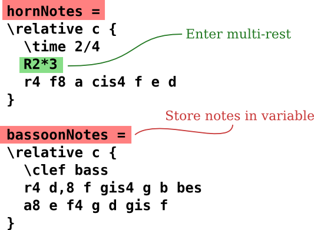
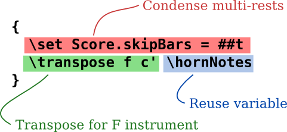
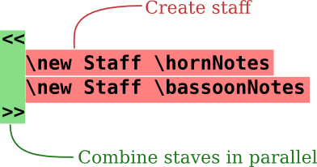

Metin girdisi
Müzik “Derlemek”

(click to enlarge)
LilyPond, bir derlenmiş sistemdir: müziği tanımlayan bir metin dosyasında çalıştırılır. Sonuç olarak elde edilen çıktı, ekranda görüntülenir veya yazdırılır. Bir bakıma, LilyPond, grafik notasyon düzenleme yazılımından ziyade bir programlama diline daha çok benzer.
Müziği grafik bir araç çubuğundan notaları sürükleyip dinamik olarak güncellenen bir partisyon üzerine yerleştirerek yazmazsınız; müziği metin olarak yazarsınız. Bu metin, LilyPond tarafından yorumlanır (veya “derlenir”), sonuç olarak güzel notasyon edilmiş nota sayfaları elde edilir.
Grafik kullanıcı arayüzlerine alışkın olan insanlar, yeni bir çalışma yöntemi öğrenmek zorunda kalabilirler, ancak sonuçlar kesinlikle buna değer!
Nota: Metin girişimizin hızlı bir genel bakışını sunuyoruz - duyulduğu kadar karmaşık değil! Bu örneklerde her ayrıntıyı anlamanıza gerek yok; başlangıç belgelerimiz her şeyi çok daha yavaş bir tempoda kapsar.
A B C kadar basit
Notalar harfler ve sayılarla kodlanır. Özel komutlar ters bölü işareti ile girilir.


Değişiklikler farklı isimlerle yapılır: diyez eklemek için -is, bemol
eklemek için ise -es (bunlar Hollanda nota isimleridir, başka diller de
mevcuttur). LilyPond, hangi notalara accidentals (işaretler) yerleştireceğini belirler.


Pop müzik
Akorları ve sözleri bir araya getirerek bir nota kağıdı elde edin:


Orkestra parçaları
Girdi dosyası, müzik parçasının notalarını içerir. Bir girdi dosyasından skor ve parçalar oluşturulabilir, böylece bir notayı değiştirmek her zaman skoru ve parçaları etkiler. Aynı müziği birden fazla yere dahil edebilmek için müzik bir “değişkene” atanır.

Bu değişken daha sonra tek bir parçada kullanılır (transpoze edilmiş, birkaç ölçüyü kapsayan kısaltılmış duraklar):


Aynı değişken, bütün eserde de kullanılır (burada konser tonunda):


Başlangıç Dokümantasyonları
Birçok kullanıcının bu yöntem ile müziğe girişmeyi biraz tuhaf bulduklarının farkındayız. Bu nedenle, yeni kullanıcılara yardımcı olmak için, Learning ile başlayan kapsamlı belgeler hazırladık. Öğrenme Kılavuzu, başlangıç için en iyi yerdir, birçok soru henüz sorulmadan önce burada cevaplanmıştır!
Yeni kullanıcıların, LilyPond’un davranışlarının bazı yönleri sebebiyle gereksiz yere kafaları karışabilir. LilyPond’un doğru çalışıp çalışmadığını sorgulamadan önce lütfen bu kılavuzu okuyun.
Daha detaylı bilgi, Manuals’da bulunabilir.
LilyPond kullanıcısı Ben Lemon, blogundaki serisiyle yeni kullanıcılara yönelik bir video tutorials yaratmıştır.
Daha Kolay Düzenleme Ortamları

(büyütmek için tıklayın)
LilyPond, kaliteli notasyonlar üretmeye odaklıdır; bir Grafiksel Kullanıcı Arayüzü (GUI) oluşturmak bu hedeften sapmamıza neden olurdu. Ancak, LilyPond girdi dosyalarını oluşturmayı kolaylaştırmayı amaçlayan diğer projeler bulunmaktadır.
Bazı düzenleme ortamları, sözdizimi vurgulama, otomatik komut tamamlama ve hazır şablonlar gibi özellikleri içerir. Diğer programlar ise grafik bir eserin doğrudan gösterimini sağlayan bir GUI sunar. Daha fazla bilgi için Daha Kolay Düzenleme’e göz atın.
Şimdi ne yapmalısınız?
Şimdi LilyPond’u İndir için hazırsınız. Hala ikna olmadınız mı? Daha Kolay Düzenleme’i okuyun.